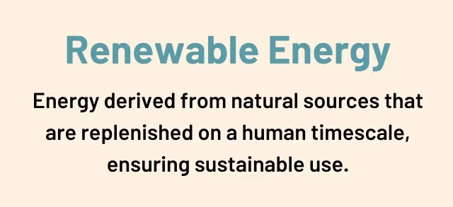
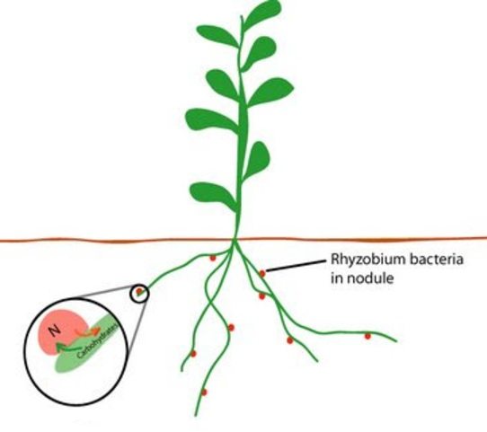
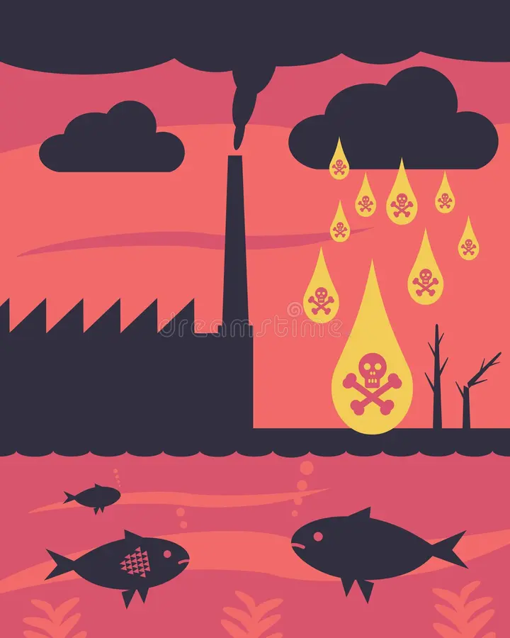

Question 1: What is the primary cause of global warming?

Question 2: Which of the following is a renewable source of energy?

Question 3: Which process is responsible for converting atmospheric nitrogen into a form usable by plants?

Question 4: Which of the following is a major contributor to acid rain formation?
